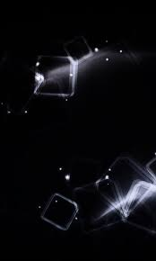

Индивидуальное задание 2.
Вариант 1: в исходный файл Experiments2.html добавить обработку события «наведение мышки на элемент». Если этот элемент относится к таблице (в теге
), то при наведении на него курсора, он должен скрываться.

Продолжить